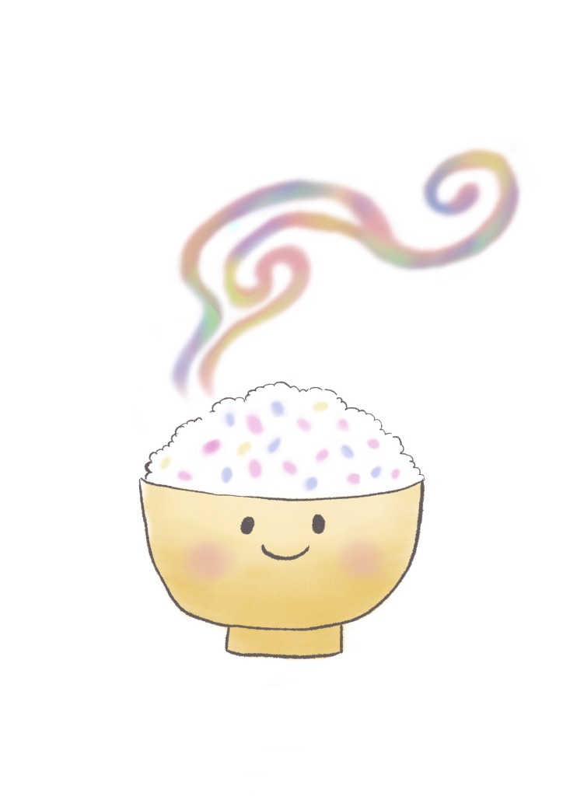

Picture Book
絵本
「自己肯定感」をテーマにした創作絵本の読み聞かせを進行中です。
子どもたちや保護者の方に向けて、"そのままで大丈夫" と思える時間づくりを目指しています。
"自分は大切な存在" と思える時間を
一緒につくりたい。
📖
THEME
「自己肯定感」
読み聞かせを通じて、自分の気持ちに気づき、大切にすることを伝えます。
🌱
TARGET
対象
幼稚園・保育園・こども園・小学校のお子さん、保護者の方。地域のイベント・PTA活動・子育て支援の場など幅広く対応します。
Venues
絵本の活動実績（一部）
- 幼稚園・保育園・こども園での読み聞かせイベント
- たな博 歌と絵本のステージ
Talk / Lecture
講演
「自己肯定感」や「ことばの力」をテーマに、地域イベント・企業研修など、さまざまな場で講演を行っています。
読み聞かせとトークを組み合わせた構成で、子どもから大人まで楽しめる内容です。
Works
講演の活動実績（一部）
- 講演・読み聞かせイベント（随時受付中）